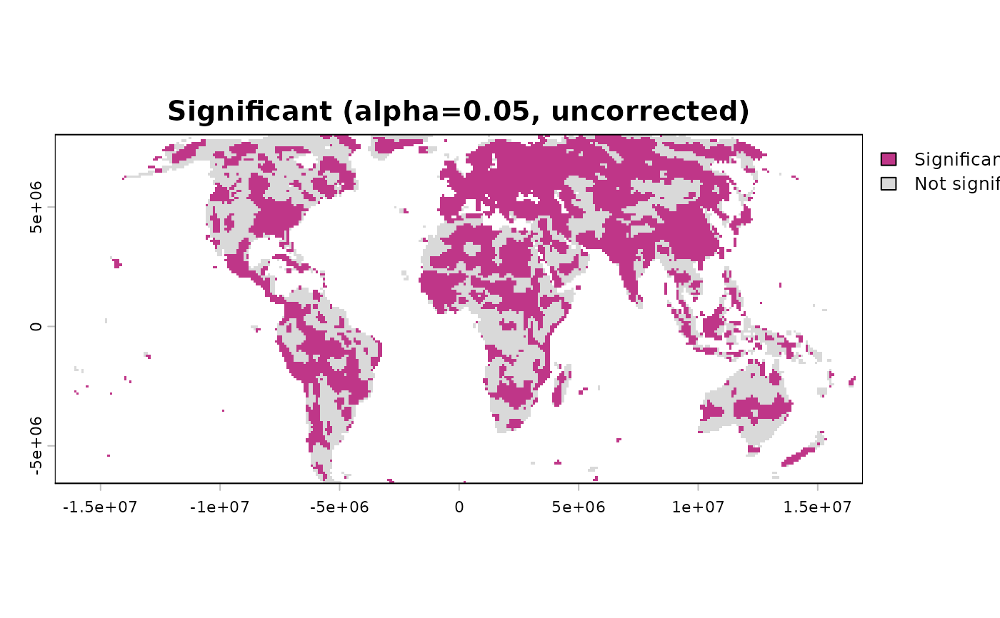
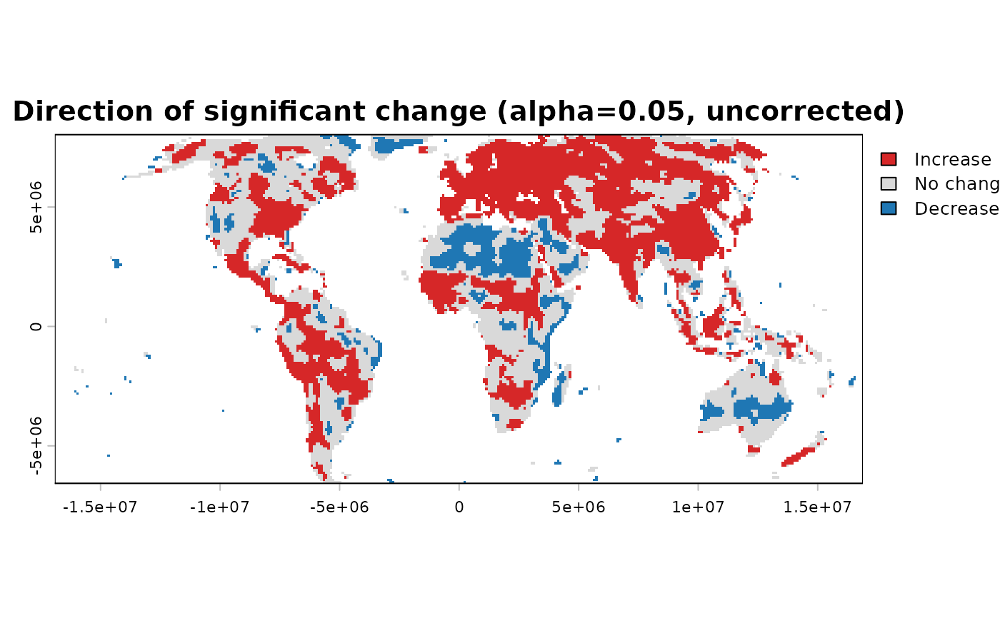

Applies a trend test to a raster time series – the general step
this function exists for, regardless of which specific test is
used underneath. trend_test() is the core inferential step of
sptrends. In a standard workflow it follows optional preprocessing
(compute_anomalies(), prewhiten()) and precedes slope
estimation (slope_estimator()) and multiple-testing correction
(fdr_correction()).
Arguments
- x
A
terra::SpatRaster; each layer is one time step, in increasing chronological order.- method
Which trend test to run.
"CMK"is the default for spatially coherent gridded data;"MK","OLS", and"MMK"address the distinct cases described below and are not equally weighted substitutes."CMK"(default): full Contextual Mann-Kendall using a square queen neighbourhood.window_size = 3Lreproduces the region described by Neeti and Eastman (2011), as implemented in TerrSet's Kendall module, with at mostm = 9: the focal cell plus eight valid neighbours. Larger odd windows extend the same CMK equations to a broader region, as explicitly anticipated by Neeti and Eastman (2011)."MK": classic cell-by-cell Mann-Kendall (no spatial averaging) – the foundational statistic"CMK"builds on."OLS": the classical parametric alternative – a per-cell ordinary least squares regression againstt, with the standard t-test on the slope coefficient (n - 2degrees of freedom); like"MK", no spatial averaging."MMK": the modified Mann-Kendall test of Hamed and Rao (1998) – corrects the classical MK test's own variance formula for temporal autocorrelation directly (an effective sample size, estimated from the significant autocorrelation of the Sen-detrended series' own ranks), rather than transforming the series the wayprewhiten()does; like"MK", no spatial averaging."MMK"is an alternative to prewhitening, not a complement to it: do not runprewhiten()before usingmethod = "MMK". Both exist to solve the same problem – temporal autocorrelation inflating the classical MK test's significance – by different means;"MMK"corrects the test statistic's own variance directly, without transforming the data first. Running it on an already-prewhitened series applies that correction to data with little autocorrelation left to detect (at best redundant), or compounds two corrections for the same issue (at worst biased) – see "Methodological details" below.Use
"CMK"when neighbouring cells are expected to exhibit coherent trends (the usual case for environmental rasters, and this function's own recommendation for that case – see "Methodological details" below). Use"MK"when reproducing the classic Mann-Kendall test, or when spatial pooling is not appropriate for the data at hand (e.g. cells that are not genuinely spatially related to one another). Use"OLS"when the residuals are genuinely expected to be close to normally distributed with no substantial outlier risk (in which case OLS is the more statistically efficient of the three), or when the result needs to be directly comparable to other analyses reported as classical linear-regression trend tests – seeslope_estimator()'s ownmethodargument for the same robust-vs-parametric trade-off applied to slope estimation instead of significance testing. Use"MMK"as an alternative to prewhitening when temporal autocorrelation is suspected but a spatial-pooling assumption ("CMK"'s own) is not appropriate, or when comparing against published studies reporting this particular correction.- ties
Logical. Only used when
methodis"CMK","MK"or"MMK".FALSE(default): closed-form variance (Eq. 3).TRUE: correct for tied (repeated) values within each cell's time series (Eq. 4) – relevant for low numeric-resolution variables. For CMK, every cell's resultingVarSis propagated through the complete RAMK covariance sum, so neighbouring series may have different tie-corrected variances. This option is slower because tie groups are calculated row by row. Most continuous environmental variables (NDVI, temperature, precipitation) rarely need this correction, since exact ties are uncommon at typical measurement precision.- t
Numeric vector of time points, one per layer. Only used when
methodis"OLS"or"MMK"("CMK"/"MK"are rank-based and need only the chronological order of layers, not their actual spacing;"MMK"needstfor its own Sen-slope detrending step, even though its significance test that follows is, like"MK", rank-based). Defaults to1:nlyr(x)(evenly-spaced steps) ifNULL. Supply real time values here if layers are not evenly spaced (e.g. a gap for a missing year) – unlike"CMK"/"MK", OLS's own slope and its significance depend on the actual spacing, not just the order. Values must be finite, unique and strictly increasing.- window_size
Odd integer greater than or equal to
3. Width and height, in raster cells, of the square queen neighbourhood used only bymethod = "CMK". The default3Lpreserves the CMK region described by Neeti and Eastman (2011), as implemented in TerrSet's Kendall module. Larger values such as5Lor7Lchange the spatial scale of the contextual test; choose them from the process scale and raster resolution, not as automatic upgrades. A non-default value with anothermethodis rejected.- precomputed_neighbourhood
Optional output of
prepare_cmk_neighbourhood(), to avoid recomputing the adjacency when this function is called repeatedly on the same raster (e.g. in a permutation loop). It does not alter the statistical method in any way; it only skips rebuilding the spatial adjacency structure thatmethod = "CMK"needs. Only used whenmethod = "CMK". IfNULL(typical single-call use), it is computed internally. Reuse is accepted only when matrix dimensions, raster geometry, queen connectivity,window_size, and the complete-case cell pattern all matchx; incompatible objects produce an error rather than a result built from the wrong neighbours.- continuity
Logical. Only used when
method = "CMK". DefaultFALSE:Zmis computed asSm / sqrt(VarSm), Eq. 10 exactly as published (Neeti and Eastman, 2011) – see "Implementation notes" below for why the continuity correction reserved for the single-cell classic MK statistic (Eq. 5) is not applied to the neighbourhood-averagedSm. Set toTRUEto apply it anyway (Zm = (Sm +- 1) / sqrt(VarSm)), matchingConMK's own convention instead – see "External validation" below, includinginst/validation/for a reproducible, cell-by-cell comparison confirming the match for neighbourhoods without zero-variance series. AtSm = 0, this option deliberately followsConMK's+1branch rather than forcingZ = 0. This is an opt-in for matching another implementation's convention, not a recommendation to prefer it over this function's own default.- n_cores
Integer. Number of cores to use for the S-statistic computation (the O(n^2) loop over pairs of time steps). Only used when
methodis"CMK","MK"or"MMK"–"OLS"'s own per-cell fit is already a single vectorised matrix operation across every cell at once, with no comparable loop to parallelise.1(default): sequential, identical to the original implementation.> 1: splits the outer loop across aparallel::makeCluster()PSOCK cluster (works on Windows, macOS, and Linux). Only worth it for long time series (largen) and/or very large rasters, since each worker needs a copy of the full data matrix.- alpha
Numeric vector of significance thresholds. What it controls: only used when
report = TRUE, passed totrend_summary()as-is. How it is used for maps: the single threshold fortrend_maps()is0.05if it is one of the values inalpha(the default vector includes it), otherwise the strictest (smallest) value supplied. The defaultc(0.1, 0.05, 0.01)reports all three side by side for context, but they are not interchangeable defaults –0.05is the conventional standard and the one used for the map;0.1is a more liberal threshold not unusual in exploratory trend studies (more power to detect a trend, at the cost of more false positives);0.01is markedly more conservative. Why not a final result: every value here is uncorrected for multiple testing – see "Methodological details" above; do not treat cells crossingalphahere as a final significance map.- report
Logical. If
TRUE(default), automatically print the summary table (trend_summary()) and draw the diagnostic histograms and maps (trend_histograms(),trend_maps()) after computing. Set toFALSEfor programmatic use (e.g. inside a loop, or when called fromworkflow_tst()).- verbose
Logical. Print progress messages and elapsed time.
Advanced; most users never need this directly. An already-running
parallel::makeCluster()PSOCK cluster (e.g. fromworkflow_tst()'s ownn_cores) to reuse instead of building a new one fromn_coresabove. When supplied,n_coresis ignored – the shared cluster's own size was already decided by whoever built it.NULL(default): builds and tears down its own cluster fromn_cores, exactly as before this argument existed.
Value
Returns a list of class c("trend_test", "sptrends"), with:
- stats
A 3-layer
SpatRaster:Sm,VarSm,pformethod = "CMK";S,VarS,pformethod = "MK"or"MMK"(VarSis the Hamed-and-Rao-corrected variance for"MMK", the uncorrected closed-form variance for"MK");beta(the OLS slope estimate),se_beta(its standard error),pformethod = "OLS".- neighbourhood
Logical:
TRUEifmethod = "CMK"(spatial averaging was used),FALSEfor"MK","MMK"and"OLS".- window_size
The odd CMK neighbourhood size used, or
NULLfor non-CMK methods.
Use print()/summary()/plot() – see print.sptrends(),
summary.sptrends(), and plot.sptrends() – rather than
accessing $stats directly for anything beyond programmatic use.
Details
Four tests are available through one interface: Contextual
Mann-Kendall ("CMK", the default), classic Mann-Kendall ("MK"),
ordinary least squares ("OLS"), and modified Mann-Kendall
("MMK"). They answer the same broad question – whether change over
time is statistically distinguishable from no trend – but make
different assumptions. See method and "Methods and method selection"
below.
Function type: Core function – one of the core building
blocks of TST and RTA. Typically followed by fdr_correction(),
once this function's own p-values exist for every spatial cell.
Typical use
raster time series
|
trend_test()
|
test statistics + raw p-value raster (`result$stats$p`)
|
fdr_correction()Use prewhiten() first when serial correlation requires treatment,
except when choosing method = "MMK", which is itself the alternative
variance correction; analyse the prewhitened result$series with the
other methods. Estimate change magnitude separately with
slope_estimator(); significance and slope answer different questions.
Methodological details
What CMK tests
CMK tests the null hypothesis of no monotonic trend for every focal
raster cell while using the focal cell's local spatial context. It
does not smooth or replace the observed values. Instead, it combines
the Mann-Kendall evidence from the focal cell and its immediate
neighbours, then adjusts the variance for correlation among those
series. A positive pooled statistic (Sm) indicates a predominantly
increasing local region; a negative value indicates a predominantly
decreasing one. The returned p tests whether that local regional
statistic is compatible with no monotonic trend.
The geographical rationale is that many environmental processes are
spatially continuous: if a trend is real, nearby cells will often
contain related evidence. CMK can therefore gain power over isolated
cell-wise MK when this assumption is justified. It must not be used
merely because the input is a raster: boundaries, fragmented
habitats, categorical mosaics, or other abrupt spatial discontinuities
can make neighbouring trends legitimately different. Use "MK" in
those cases.
CMK and prewhitening – two separate operations
trend_test(method = "CMK") does not prewhiten the series. This
point is easy to misunderstand from Neeti and Eastman (2011). Their
article presents prewhitening and contextual significance testing
together in one broader analytical procedure: the discussion and
flowchart first address serial autocorrelation and then apply CMK to
the resulting series. That presentation can make prewhitening look
like an internal part of CMK. It is not. The defining CMK equations
(their Eqs. 7-13) contain the local average of Kendall statistics,
the cross-correlation-adjusted variance, and its standardisation;
they contain no prewhitening transformation.
The two operations address different dependencies:
serial autocorrelation is dependence through time within one cell; diagnose and, when justified, treat it before this function with
prewhiten(), or use"MMK"as a non-prewhitening alternative;spatial cross-correlation is contemporaneous dependence between different cells; CMK accounts for it in
VarSm.
Prewhitening one cell at a time does not remove the lag-zero
cross-correlation between neighbouring cells. Conversely, CMK's
spatial variance adjustment does not remove serial autocorrelation.
A workflow that needs both therefore calls prewhiten() first and
trend_test(method = "CMK") second. Keeping them as separate,
composable functions makes the statistical role of each step
explicit.
Relationship between CMK and RAMK
CMK is the moving-window raster application of the analytical Regionally Averaged Mann-Kendall (RAMK) test of Douglas, Vogel and Kroll (2000). The mathematical logic is shared:
calculate Kendall's
Sfor every series in a region;average those statistics to obtain the regional statistic;
include all within-region cross-covariances in its variance;
standardise the regional statistic and obtain a p-value.
RAMK applies this calculation once to a predefined group of stations.
CMK moves the region across a raster and returns one result per focal
cell. With the default complete 3 by 3 queen neighbourhood, the local
region contains nine series: the focal cell plus eight neighbours.
Larger odd window_size values use the corresponding square region.
At raster edges or beside missing cells, m is the number actually
available, so incomplete regions are not silently treated as complete.
This function is therefore an analytical RAMK
calculation for each local raster region under the common-length
conditions and covariance formulation developed in both papers; it
is not a general RAMK interface for arbitrary station regions.
How CMK is calculated
For each valid cell, trend_test() performs the following steps.
Compute the ordinary Mann-Kendall statistic
Sfrom all ordered pairs of time steps. No slope magnitude enters this statistic.Define the local square region from the focal cell and the valid queen neighbours within
window_size.Compute
Smas the mean of theSstatistics in that region (Neeti and Eastman Eq. 7; Douglas et al. Eq. 7).Estimate every lag-zero cross-correlation among the regional series and include the corresponding covariance terms in
VarSm(Neeti and Eastman Eqs. 11-13; Douglas et al. Eqs. 11-13). When ties are corrected, each pair usesrho[i,j] * sqrt(VarS[i] * VarS[j]); thus different tie patterns may give different cell-wise variances without imposing the focal cell's variance on the rest of the region.By default, calculate
Zm = Sm / sqrt(VarSm)and its two-sided normal-approximation p-value.
The covariance adjustment is essential. Treating neighbouring series as independent would underestimate the uncertainty of their pooled statistic and create too many apparently significant trends. The correction is analytical and relies on the assumptions stated in the source methods; it should be interpreted as a model-based variance adjustment, not as proof that all forms of spatial dependence have disappeared.
Statistical assumptions and interpretation
for every method, layers are ordered chronologically, represent comparable time steps, and valid cells have complete series;
for
"CMK","MK", and"MMK", the trend of interest is monotonic, not necessarily linear, and the normal approximation is adequate for the available record;for
"CMK", local spatial coherence is scientifically defensible;for
"CMK"and"MK", serial autocorrelation has been assessed separately;"MMK"instead adjusts the rank-test variance for it;for
"OLS", the temporal relationship is linear and the usual regression-inference assumptions concerning residual independence, constant variance, and approximate normality are defensible;raw cell-wise p-values are followed by a multiple-testing procedure such as
fdr_correction()before producing a final significance map.
Sm describes direction and strength on the Mann-Kendall rank scale,
not change per year. Use slope_estimator() for magnitude. A small
p supports a locally coherent monotonic trend; it does not establish
causation, practical importance, linearity, or a particular slope.
This is an independent implementation of the published equations. It is not affiliated with the original authors and does not port code from TerrSet's Kendall module.
Methods and method selection
Original publication: Neeti & Eastman (2011), the "Contextual Mann-Kendall" (CMK) extension of the classic Mann-Kendall test.
Why
"CMK"is this function's own default and recommendation: gridded environmental data (the case this package is built around) routinely shows spatial autocorrelation – a real trend at one cell is expected, not merely permitted, to look similar to its immediate neighbours (Tobler's first law). CMK is designed to use that expected structure to its advantage, borrowing statistical strength across the neighbourhood while adjusting the test statistic's own variance to keep the significance decision formally valid – see "Methodological details" above for the mechanism."MK"is the right choice specifically when that spatial expectation does not hold for the data at hand (see "Whymethod = \"mk\"remains available" below), not as an equally-good default.Why
method = "MK"remains available: classic Mann-Kendall is the reference method in the literature, with the longest track record and the simplest assumptions (no spatial pooling at all)."CMK"is not a strict replacement for it – see themethodargument below for when each is the more defensible choice.Why
method = "OLS"is offered too:"CMK"/"MK"are both rank-based (built on the Mann-KendallSstatistic), robust to outliers and non-normal noise – this package's own default assumption about gridded environmental data, and the reason"CMK"/"MK"are recommended ahead of"OLS"in general."OLS"is the classical parametric alternative – the standard significance test for a linear regression slope – offered for the specific, narrower case where that robustness genuinely is not needed (see themethodargument below), the same reasonslope_estimator()offers Theil-Sen, OLS, and Siegel's repeated median rather than only one robust option: this package aims to be a platform for comparing such methods (seecompare_detections()), not a vehicle for only one statistical philosophy.Why
method = "MMK"is offered, and why it is an alternative to prewhitening, not a complement: temporal (not spatial) autocorrelation is a separate problem from the one CMK addresses, and this package's other answer to it isprewhiten()– which transforms the series before testing it."MMK"(Hamed and Rao, 1998) solves the same problem differently: it leaves the series untouched and corrects the classical MK test's own variance formula directly, using an effective sample size derived from the autocorrelation remaining in a Sen-detrended version of the ranks. Because both correct for the same underlying issue by different mechanisms, applying both together (prewhitening the series and then also using"MMK") is not additive – see themethodargument below for when"MMK"is the more appropriate choice on its own.Main references: Douglas, Vogel & Kroll (2000) for the Regionally Averaged Mann-Kendall (RAMK) statistic and its cross-correlation-adjusted variance; Neeti & Eastman (2011) for applying that analytical RAMK logic as CMK in a moving 3 by 3 raster neighbourhood, while explicitly noting that the technique can be extended to any neighbourhood size (CMK itself does not prewhiten); Mann (1945) and Kendall (1975) for the foundational statistic
"CMK"/"MK"extend; Tobler (1970) for the spatial-coherence rationale behind averaging with the neighbourhood; Legendre (1805) and Gauss (1809) for the classical least-squares regression"OLS"is built on; Hamed and Rao (1998) for"MMK". Full citations appear under "References" below.Typical applications: trend detection in gridded remote sensing and climate time series, where a genuine trend is expected to be spatially coherent rather than isolated in a single pixel.
Monotonic trends only – deseasonalise first if needed
Mann-Kendall (and its contextual variant here) tests for a monotonic
trend: a consistent tendency to increase or to decrease over time. It
is not designed to detect or accommodate a periodic/seasonal cycle –
if the input has one (e.g. raw monthly data with an annual cycle), that
cycle itself will dominate the ranking of values and can produce a
meaningless or misleading trend result. Deseasonalise first (see
compute_anomalies()) and run this function on the anomalies, not on
the raw seasonal series.
Implementation notes
Eq. 10 (Zm = Sm / sigma_m) is implemented as written, without the
continuity correction: confirmed directly against Neeti and Eastman's
own text for Eqs. 7-10, which introduce Sm, its mean and variance,
and Zm with no +-1 term anywhere in that derivation – the continuity
correction belongs to the single-cell classic MK statistic (Eq. 5)
specifically, whose discrete step-2 structure motivates it; Sm,
being an average across a neighbourhood, loses that structure.
Cells with a constant time series (zero variance) would otherwise
produce NaN correlations that propagate to their valid neighbours;
here the zero standard deviation is replaced by Inf before dividing,
giving a well-defined zero correlation. The neighbour-neighbour
covariance term is computed via a closed-form identity that avoids an
O(k^2) loop per cell, and the whole variance adjustment uses sparse
matrix multiplication (package Matrix) rather than a tapply() loop.
External validation
ConMK (Antiphon, GitHub, https://github.com/antiphon/ConMK,
not on CRAN): the strongest external check available for this
function, since its C++ source was inspected directly rather than
trusted from its own documentation. S/Sm matched to
floating-point precision on 100 cells of simulated data. The
bundled frozen comparison records S/Sm and p; the accompanying
script also records both variance estimates when the comparison is
re-run. p differed for
97 of the 100 cells (the remaining 3 have Sm near zero, where the
correction below crosses zero and produces the opposite-signed
effect instead), traced to a specific line in ConMK's own source
(Z = (Sm +- 1) / sqrt(s2), a continuity correction this function
deliberately omits – see "Implementation notes" above, confirmed
directly against Eqs. 7-10). Not a bug in either implementation:
ConMK applies the correction meant for the single-cell classic MK
statistic to the neighbourhood-averaged one instead, a different
choice from what Eq. 10 itself specifies. Set continuity = TRUE
(see that argument above) to reproduce ConMK's continuity
convention. An automated regression test matches its frozen p
values for the 91 cells whose neighbourhoods contain no constant
series. One narrow, documented exception: for the 9 of 100 cells in
that comparison affected by a constant (zero-variance) neighbouring
cell, the cross-correlation term either implementation needs is
undefined (0/0); this package's own convention (zero standard
deviation replaced with Inf, giving zero correlation – see
"Implementation notes" above) is not asserted to match ConMK's
own, unknown, handling of the same undefined case.
TerrSet's own Kendall module (Eastman's own reference
implementation): method = "MK" (no spatial pooling) matched
TerrSet's own classic Kendall module exactly on the same 100 cells,
including p. The contextual case (method = "CMK", TerrSet's own
KENDALL_Crosscorrelation module) did not match as cleanly, and
with no consistent, explainable pattern the way the ConMK
difference has – but TerrSet is closed-source, and its own
intermediate values (the pooled statistic and its own variance,
analogous to this function's Sm/VarSm) are not exposed for
inspection, only the final Z/p. Becoming free to use in 2024
(as "liberaGIS") did not make its own source available – what is
published on GitHub is the installer and user guide, not the
analytical modules' own code. Without the intermediate values, this
difference cannot be traced to a specific formula choice the way
the ConMK one was, and is reported here as an unresolved,
inconclusive observation, not a confirmed discrepancy – closed,
unverifiable code is not treated as a ground truth this function's
own output is expected to match.
Computational considerations
A complete window_size by window_size region contains up to
window_size^2 series including the focal cell. Increasing the window
therefore enlarges the sparse adjacency and every regional covariance
calculation; runtime and memory do not remain constant. Start with the
default 3 by 3 region and benchmark broader scales on representative data.
Observed execution time versus TerrSet: in the like-for-like validation run, using the same input raster, this implementation of CMK completed substantially faster than TerrSet's contextual Kendall module. This is a practically important advantage for large raster series. It is reported as an observed comparison rather than a universal benchmark: absolute speed and the ratio between programs depend on hardware, raster dimensions, storage, software versions, and the parallel settings used.
Quality assurance
The implementation is exercised at several independent levels:
hand-calculated tests verify
S, tie-correctedVarS,Sm,VarSm, and their p-values;an equation-level test verifies that the centre cell of a 3 by 3 CMK window equals a direct analytical RAMK calculation for the same region;
regression tests verify that the default and explicit 3 by 3 results are identical, and that 5 by 5 regions use the expected valid cells;
classic MK is compared with
Kendall::MannKendall()andtrend::mk.test();CMK is compared cell by cell with the open-source
ConMKimplementation, with its continuity convention tested separately;rktindependently verifies the regional score aggregation (S / m = Sm); its Hirsch-Slack corrected variance is deliberately not required to equal CMK's analytical RAMK variance;the classic TerrSet Kendall result is recorded as an exact external match; this is only a partial TerrSet validation because its closed-source contextual result, which exposes neither
SmnorVarSm, is retained as an inconclusive comparison;automated tests cover ties, constant series, missing and isolated cells, raster edges, queen and rook adjacency objects, serial versus parallel execution, continuity choices, reporting, and returned object structure.
Frozen external results and their reproducible script are stored in
inst/validation/. Package-wide checks also include the complete
testthat suite, coverage inspection, R CMD check, goodpractice,
lintr, and spelling review; see ?sptrends for the overall quality
policy. A tool being part of that policy does not imply that a
particular source archive has passed its latest run: release-specific
results are recorded only after an actual run in cran-comments.md.
Limitations and scope
It does not prewhiten the series for serial correlation (see
prewhiten()), does not correct for multiple testing
(see fdr_correction()), and does not compute a separate robust
estimate of trend magnitude such as the Theil-Sen slope. The "OLS"
branch necessarily returns its fitted slope (beta), but robust and
method-independent magnitude estimation belongs to
slope_estimator().
CMK defaults to the local queen 3 by 3 region described in the source
paper, as implemented in TerrSet's Kendall module. Neeti and Eastman
(2011) explicitly state that the
technique can be extended to any neighbourhood size, so larger odd
window_size values apply the same equations at a broader spatial scale.
This changes the scale of inference: larger windows can stabilise broad
regional signals but may dilute small or spatially heterogeneous trends.
At edges and beside invalid cells the available region becomes smaller.
"MK",
"MMK", and "OLS" do not perform spatial pooling. None of the four
methods, by itself, controls multiplicity across the returned raster.
Multiple testing: the p-values and alpha thresholds are uncorrected
This applies identically to all four methods ("CMK", "MK",
"OLS", and "MMK") – the problem below is about how many tests
were run, not about which test statistic each one used.
What alpha is: the significance threshold (e.g. 0.05) is the
pre-specified Type I error rate of a test under a true null
hypothesis. It is not the posterior probability that a detected
trend is false, and its single-test guarantee does not automatically
extend to a raster-wide family of tests.
The error that follows from using it directly here: this
function returns one test for every valid cell – a raster with
thousands of cells means thousands of simultaneous tests, not one.
CMK results are also spatially related through overlapping local
regions; "cell-wise" does not mean statistically independent. Reading
alpha against p cell by cell, with no adjustment for that
total count, is a form of selective inference: some cells will
cross any fixed alpha purely by chance, regardless of whether a
real trend is present anywhere, and deciding significance cell by
cell without accounting for how many tests were run leaves both the
family-wise error rate and the false discovery rate uncontrolled.
Consequently, an unknown fraction of the cells called "significant"
this way may be false discoveries. The summary and maps produced
when report = TRUE
describe this uncorrected result only, not a defensible final
significance map, whichever method was used to produce them.
What to do about it: always run fdr_correction() on p
before reporting which cells are "significant" – see
Gutiérrez-Hernández & García (2025) below for the full statistical
argument (this exact problem, in this exact context, is what that
paper is about).
References
Foundational statistic this method builds on (the S/VarS this
function computes, before the neighbourhood adjustment below):
Mann, H.B. (1945) Nonparametric tests against trend. Econometrica, 13(3), 245-259. doi:10.2307/1907187
Kendall, M.G. (1975) Rank Correlation Methods (4th edn). Charles Griffin, London. No DOI available (pre-DOI-era publication).
Primary method reference:
Neeti, N. and Eastman, J.R. (2011) A Contextual Mann-Kendall Approach for the Assessment of Trend Significance in Image Time Series. Transactions in GIS, 15(5), 599-611. doi:10.1111/j.1467-9671.2011.01280.x
method = "OLS": the classical least-squares regression this test's
own t-test is built on, independently attributed to both of the
following (no single original paper; both pre-DOI-era):
Legendre, A.M. (1805) Nouvelles méthodes pour la détermination des orbites des comètes. Firmin Didot, Paris.
Gauss, C.F. (1809) Theoria motus corporum coelestium in sectionibus conicis solem ambientium. Perthes und Besser, Hamburg.
method = "MMK":
Hamed, K.H. and Rao, A.R. (1998) A modified Mann-Kendall trend test for autocorrelated data. Journal of Hydrology, 204(1-4), 182-196. doi:10.1016/S0022-1694(97)00125-X
Conceptual grounding for the spatial-coherence rationale behind averaging with the neighbourhood:
Tobler, W. (1970) A Computer Movie Simulating Urban Growth in the Detroit Region. Economic Geography, 46(sup1), 234-240. doi:10.2307/143141
Source of the Regionally Averaged Mann-Kendall (RAMK) regional statistic and its analytical cross-correlation variance correction; CMK applies the same equations to a moving local raster region:
Douglas, E.M., Vogel, R.M. and Kroll, C.N. (2000) Trends in Floods and Low Flows in the United States: Impact of Spatial Correlation. Journal of Hydrology, 240(1-2), 90-105. doi:10.1016/S0022-1694(00)00336-X
Official software implementation (this function is an independent re-implementation of the published equations, not a port of this module's code):
Eastman, J.R. (2016) TerrSet Geospatial Monitoring and Modeling System: Kendall module. Clark Labs, Clark University, Worcester, MA.
On why the uncorrected alpha/p from this function should not be
read as a final significance result (see "Methodological details"
above):
Gutiérrez-Hernández, O. and García, L.V. (2025) The ghost of selective inference in spatiotemporal trend analysis. Science of The Total Environment, 958, 177832. doi:10.1016/j.scitotenv.2024.177832
This function is used (not authored) by the following studies, which can serve as applied examples of the Contextual Mann-Kendall test in practice:
Gutiérrez-Hernández, O. and García, L.V. (2025) Uncovering true significant trends in global greening. Remote Sensing Applications: Society and Environment, 37, 101377. doi:10.1016/j.rsase.2024.101377
Gutiérrez-Hernández, O., & García, L.V. (2024) Robust Trend Analysis in Environmental Remote Sensing: A Case Study of Cork Oak Forest Decline. Remote Sensing, 16(20), 3886. doi:10.3390/rs16203886
Gutiérrez-Hernández, O. and García, L.V. (2025, September 17) Multiple Testing in Remote Sensing: Addressing the Elephant in the Room. Available at SSRN: https://ssrn.com/abstract=4891512. doi:10.2139/ssrn.4891512
Gutiérrez-Hernández, O., & García, L.V. (2025) False discovery rate estimation and control in remote sensing: reliable statistical significance in spatially dependent gridded data. Remote Sensing Letters, 16(5), 537-548. doi:10.1080/2150704X.2025.2478664
Gutiérrez-Hernández, O., & García, L.V. (2025) Implementing the Linear Adaptive False Discovery Rate Procedure for Spatiotemporal Trend Testing. Mathematics, 13(22), 3630. doi:10.3390/math13223630
Gutiérrez-Hernández, O., & García, L.V. (2026) Intensified and Extended Growing Seasons in Abies marocana Forests (2000-2024): A Robust Seasonal Trend Analysis Using 16-Day MODIS EVI Time Series. Remote Sensing, 18(12), 2052. doi:10.3390/rs18122052
See also
prewhiten() for temporal preprocessing,
slope_estimator() for trend magnitude, and fdr_correction() for
multiplicity across valid cells; workflow_trends() combines these
stages in one configurable workflow.
Examples
# \donttest{
# Annual mean NDVI from the bundled environmental dataset.
r <- read_ordered_stack(example_data("vhp_ndvi"))
#> Temporal order auto-detected with pattern '(19[0-9]{2}|20[0-9]{2})'.
#> Temporal order verification (mandatory, cannot be skipped):
#> stack_position detected_number file
#> 1 1982 VHP_SMN_annual_ndvi_1982.tif
#> 2 1983 VHP_SMN_annual_ndvi_1983.tif
#> 3 1984 VHP_SMN_annual_ndvi_1984.tif
#> 4 1985 VHP_SMN_annual_ndvi_1985.tif
#> 5 1986 VHP_SMN_annual_ndvi_1986.tif
#> 6 1987 VHP_SMN_annual_ndvi_1987.tif
#> 7 1988 VHP_SMN_annual_ndvi_1988.tif
#> 8 1989 VHP_SMN_annual_ndvi_1989.tif
#> 9 1990 VHP_SMN_annual_ndvi_1990.tif
#> 10 1991 VHP_SMN_annual_ndvi_1991.tif
#> 11 1992 VHP_SMN_annual_ndvi_1992.tif
#> 12 1993 VHP_SMN_annual_ndvi_1993.tif
#> 13 1994 VHP_SMN_annual_ndvi_1994.tif
#> 14 1995 VHP_SMN_annual_ndvi_1995.tif
#> 15 1996 VHP_SMN_annual_ndvi_1996.tif
#> 16 1997 VHP_SMN_annual_ndvi_1997.tif
#> 17 1998 VHP_SMN_annual_ndvi_1998.tif
#> 18 1999 VHP_SMN_annual_ndvi_1999.tif
#> 19 2000 VHP_SMN_annual_ndvi_2000.tif
#> 20 2001 VHP_SMN_annual_ndvi_2001.tif
#> 21 2002 VHP_SMN_annual_ndvi_2002.tif
#> 22 2003 VHP_SMN_annual_ndvi_2003.tif
#> 23 2004 VHP_SMN_annual_ndvi_2004.tif
#> 24 2005 VHP_SMN_annual_ndvi_2005.tif
#> 25 2006 VHP_SMN_annual_ndvi_2006.tif
#> 26 2007 VHP_SMN_annual_ndvi_2007.tif
#> 27 2008 VHP_SMN_annual_ndvi_2008.tif
#> 28 2009 VHP_SMN_annual_ndvi_2009.tif
#> 29 2010 VHP_SMN_annual_ndvi_2010.tif
#> 30 2011 VHP_SMN_annual_ndvi_2011.tif
#> 31 2012 VHP_SMN_annual_ndvi_2012.tif
#> 32 2013 VHP_SMN_annual_ndvi_2013.tif
#> 33 2014 VHP_SMN_annual_ndvi_2014.tif
#> 34 2015 VHP_SMN_annual_ndvi_2015.tif
#> 35 2016 VHP_SMN_annual_ndvi_2016.tif
#> 36 2017 VHP_SMN_annual_ndvi_2017.tif
#> 37 2018 VHP_SMN_annual_ndvi_2018.tif
#> 38 2019 VHP_SMN_annual_ndvi_2019.tif
#> 39 2020 VHP_SMN_annual_ndvi_2020.tif
#> 40 2021 VHP_SMN_annual_ndvi_2021.tif
#> 41 2022 VHP_SMN_annual_ndvi_2022.tif
#> 42 2023 VHP_SMN_annual_ndvi_2023.tif
 #> Stack built: 42 layers, 146 x 338 cells.
#> >> [read_ordered_stack()] elapsed: 0.14 s
# Test every cell for a monotonic trend, borrowing strength from each
# cell's spatial neighbourhood (method = "CMK", the default).
trend <- trend_test(r, report = FALSE, verbose = FALSE)
trend
#> <Contextual Mann-Kendall (3x3) result>
#> Cells tested: 15675 | significant at alpha=0.05 (uncorrected): 9004 (57.4%)
summary(trend)
#> Cells with complete time series: 15675
#> At alpha=0.05 -- increase: 7167 (45.7%) | decrease: 1837 (11.7%) | no change: 6671 (42.6%)
# Significance and direction, rather than the raw trend statistic.
plot(trend, panels = c("significance", "direction"))
#> Stack built: 42 layers, 146 x 338 cells.
#> >> [read_ordered_stack()] elapsed: 0.14 s
# Test every cell for a monotonic trend, borrowing strength from each
# cell's spatial neighbourhood (method = "CMK", the default).
trend <- trend_test(r, report = FALSE, verbose = FALSE)
trend
#> <Contextual Mann-Kendall (3x3) result>
#> Cells tested: 15675 | significant at alpha=0.05 (uncorrected): 9004 (57.4%)
summary(trend)
#> Cells with complete time series: 15675
#> At alpha=0.05 -- increase: 7167 (45.7%) | decrease: 1837 (11.7%) | no change: 6671 (42.6%)
# Significance and direction, rather than the raw trend statistic.
plot(trend, panels = c("significance", "direction"))


# A larger odd window applies the CMK equations at a broader scale.
trend_5 <- trend_test(r, window_size = 5L, report = FALSE,
verbose = FALSE)
trend_5$window_size
#> [1] 5
# }